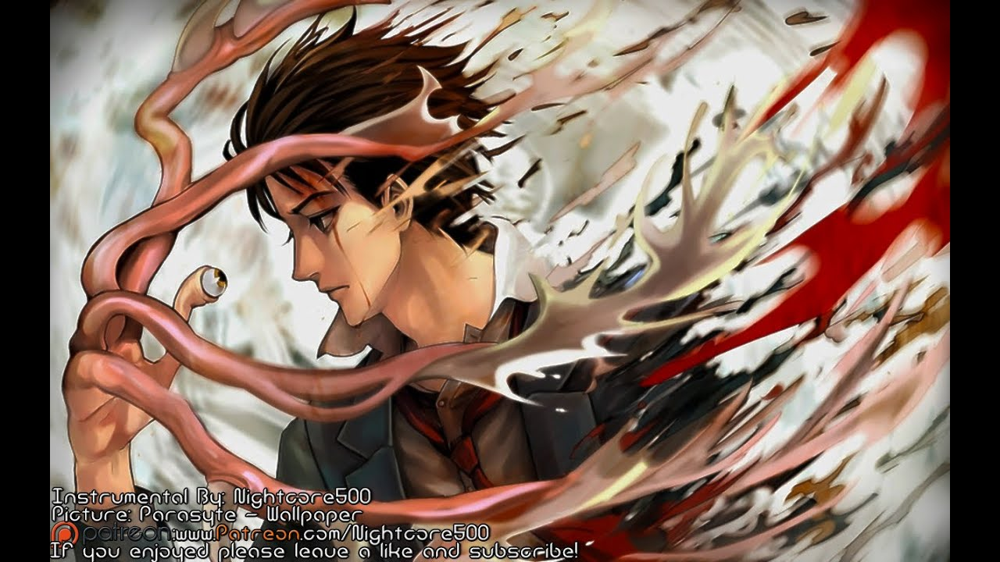

BACK
Action Anime
1. Parasyte-the maxim plot:
The 17-year-old Izumi Shinichi lives with his mother and father in a quiet neighborhood in Tokyo. One night, worm-like aliens called Parasytes to invade Earth, taking over the brains of human hosts by entering through their ears or noses. One Parasytes attempts to crawl into Shinichi's ear while he sleeps, but fails since he is wearing headphones, and enters his body by burrowing into his arm instead, taking over his right hand and is named Migi.

Because Shinichi was able to prevent Migi from traveling further up into his brain, both beings retain their separate intellect and personality. As the duo encounter other Parasytes, they capitalize on their strange situation and gradually form a strong bond, working together to survive. This gives them an edge in battling other Parasytes who frequently attack the pair upon realization that Shinichi's human brain is still intact. Shinichi feels compelled to fight other Parasytes, who devour humans as food while enlisting Migi's help.
IF YOU WANNA DOWNLOAD "PARASYTE- THE MAXIM"
CLICK HERE
Attack on Titan Season 1 Plot :
Getinto
Several hundred years ago, humans were nearly exterminated by giants. Giants are typically several stories tall, seem to have no intelligence, devour human beings, and, worst of all, seem to do it for pleasure rather than as a food source. A small percentage of humanity survived by walling themselves in a city protected by extremely high walls, even taller than the biggest of giants.

Flash forward to the present and the city has not seen a giant in over 100 years. Teenage boy Eren and his foster sister Mikasa witness something horrific as the city walls are destroyed by a super giant that appears out of thin air. As the smaller giants flood the city, the two kids watch in horror as their mother is eaten alive. Eren vows that he will murder every single giant and take revenge for all of mankind.
IF YOU WANNA DOWNLOAD "ATTACK ON TITAN SEASON 1"
CLICK HERE